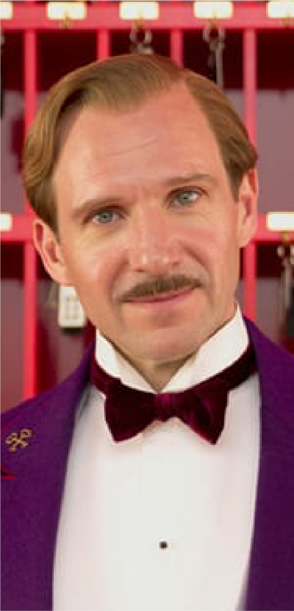

-

Ralhp Fiennes
as
Gustave H. -
Tony Revolori
as
Zero Moustafa -
Saoirse Ronan
as
Agatha -

Adrian Brody
as
Dmitri -
Edward Norton
as
Albert Henckels -

Tilsa Swinton
as
Madame D. -

Willem Dafoe
as
J. G. Jopling -
F. Murray Abraham
as
the elderly Zero -
Mathieu Amalric
as
Serge X -
Bill Murray
as
M. Ivan -

Jeff Goldblum
as
Kovacs